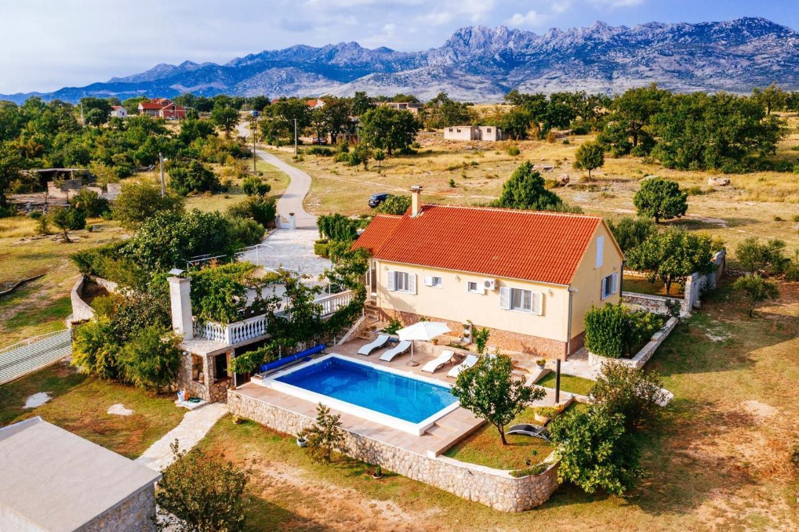

Dobrodošli u Villu Sučić. Vaš miran kutak između mora i planina
Smještena u srcu Zadarskog zaleđa, Villa Sučić nalazi se u slikovitom mjestu Zaton Obrovački, udaljenom svega 10-ak minuta vožnje od mora, a opet dovoljno daleko da uživate u potpunom miru, tišini i prirodi. Ova prostrana kuća za odmor idealan je izbor za obitelji, parove i prijatelje koji žele odmor daleko od gužve – u vlastitom ritmu.
Lokacija
Villa Sučić nalazi se na privatnom imanju od preko 2000 m², s prekrasnim pogledom na planinu Velebit. Do nas je lako doći – blizu smo glavne ceste koja povezuje Zadar, Obrovac i Nacionalni park Paklenicu, ali dovoljno sklonjeni da imate svoj mir i privatnost.
Što je u blizini?
- Zrmanja
- Obrovac
- Nacionalni park Paklenica
- Maslenički most i Jadranska Obala
- Zadar
Rijeka idealna za rafting, plivanje i uživanje u netaknutoj prirodi (10 min vožnje)
Povijesni gradić uz rijeku s trgovinama i restoranima (10 min)
Raj za planinare i zaljubljenike u prirodu (25 min)
Do prve plaže imate oko 10 minuta vožnje
Poznata turistička destinacija s bogatom kulturnom baštinom (40 min)
Što nudi Vila Sučić
- Privatni bazen s ležaljkama i sunčalištem
- Prostrani vrt i terasa s pogledom na planinu
- Opremljena kuhinja, dnevni boravak, 3 spavaće sobe i 3 kupaonice
- Klima uređaj, WiFi, perilica rublja i perilica posuđa
- Roštilj, vanjski stol za objedovanje, dječje igralište
- Parking unutar dvorišta
- Kućni ljubimci dobrodošli (na upit)
Villa Sučić je savršeno mjesto za one koji traže autentičan dalmatinski odmor u prirodi, bez odricanja komfora. Ako želite istražiti okolne atrakcije ili samo uživati u privatnosti vlastitog bazena – ovdje imate sve.
Rezervirajte svoj boravak već danas i doživite pravi odmor, kako ga mi Dalmacijci zamišljamo – s mirom, suncem i srdačnim gostoprimstvom.